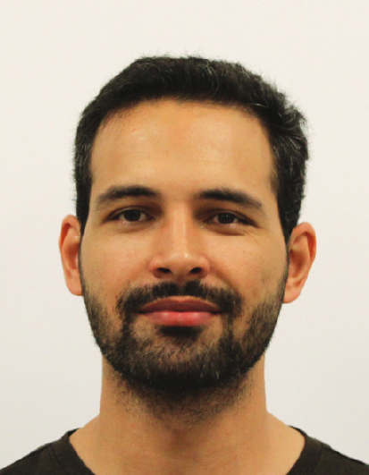

Asad Ur Rahman
Structural Engineering PhD candidate · University of Houston
“We shape our buildings; thereafter they shape us.”
— Winston Churchill
About

I am a Structural Engineering PhD candidate at the University of Houston, working in the Structural and Artificial Intelligence Lab (SAIL) with Prof. Vedhus Hoskere. My research sits at the intersection of civil engineering, computer vision, and deep learning. I build digital twins of real infrastructure and teach machines to inspect it.
Over the past five years I have worked on bridges and buildings: collecting drone imagery of railway bridges in Houston, training transformer-based segmentation models on synthetic point clouds, and assessing seismic hazard for hydropower and housing projects across Pakistan. Before Houston I earned an M.S. from the National University of Science and Technology in Islamabad and a B.E. in Civil Engineering from UET Peshawar.
In summer 2025 I worked in the Diagnostics group at Walter P Moore in Houston, building internal tooling for damage annotation and quantitative condition assessment of existing structures. I expect to defend my dissertation in July 2026, and I am looking for research and engineering roles where I can bring deep learning to bear on real‑world structural problems.
Research Interests
My work clusters into three overlapping threads:
- Digital twins of civil infrastructure. Photogrammetric and LiDAR reconstruction of bridges and buildings, with a focus on bridging the sim‑to‑real gap by training on procedurally generated synthetic data.
- Automated inspection and damage assessment. Semantic and instance segmentation of structural components, cracks, corrosion, and defects from drone and ground‑level imagery using transformer architectures (Segformer, Mask2Former, and related).
- Seismic hazard assessment. Probabilistic seismic hazard analysis (PSHA), earthquake catalogue compilation, and source modeling for region‑ and site‑specific applications in South Asia.
Education
- 2021 — 2026
-
Ph.D., Structural Engineering
University of Houston · Houston, USA - 2017 — 2020
-
M.S., Structural Engineering
National University of Science and Technology · Islamabad, Pakistan - 2013 — 2017
-
B.E., Civil Engineering
University of Engineering and Technology (UET), Peshawar · Peshawar, Pakistan
Relevant coursework
Experience
Graduate Research Assistant
Aug 2021 — Present- Digital twins of bridges. Collected drone imagery of the GH&SA Railroad Bridge and Main Street viaduct in Houston using Skydio X2 / 2+ and reconstructed them with Reality Capture, Bentley iTwin, and WebODM.
- Damage segmentation. Competed in the dacl10k semantic segmentation Kaggle challenge on concrete bridge damage using Segformer.
Graduate Structural Engineering Intern
Jun 2025 — Aug 2025- Built internal tools for streamlined damage annotation of structural imagery and point clouds.
- Trained deep‑learning models for automated damage segmentation.
- Produced digital twins of existing structures and implemented quantitative damage assessment workflows.
Lecturer
Feb 2021 — Jul 2021- Taught undergraduate courses including Special Topics and Survey II.
- Updated course curricula to reflect current industry practice and supervised two undergraduate research groups.
Structural Design Engineer (Intern)
Sep 2020 — Jan 2021- Contributed to structural design, analysis, and drawing preparation for building projects under senior engineers.
- Ensured design compliance with relevant codes and standards.
Graduate Teaching Assistant
Sep 2018 — Jul 2019- Supported teaching of undergraduate civil engineering courses, ran tutorials, and assisted with laboratory experiments.
Funded Research Projects
Developing Digital Twins for Texas Bridges
Collected and processed imagery and point clouds of Texas bridges, developed a synthetic bridge point‑cloud dataset, and trained deep‑learning models for instance and semantic segmentation of structural components.
Seismic Hazard Maps for the Building Code of Pakistan
Reviewed current PSHA methodologies, compiled earthquake catalogues and crustal fault information, and contributed to modeling and analysis for an update to Pakistan's national seismic hazard maps.
Site‑specific PSHA for Gulpur Hydropower Project
Collected geological and seismological data for the Gulpur site and applied probabilistic seismic hazard assessment to quantify ground‑shaking hazard, working with international engineers from DAELIM.
Site‑specific PSHA for Naya Pakistan Housing Project
Reviewed geological and seismological conditions at the Islamabad Capital Territory housing sites, used PSHA tools to evaluate potential ground shaking, and worked with NESPAK engineers to integrate seismic safety measures into the structural design.
Publications
Full list also available on Google Scholar and ResearchGate.
Journal Articles & Preprints
- Varghese, S., Gao, J., Rahman, A. U., & Hoskere, V. (2025). BridgeEQA: Virtual Embodied Agents for Real Bridge Inspections. arXiv:2511.12676. arXiv
- Rahman, A. U., & Hoskere, V. (2026). Automated framework for element‑level bridge inspection. Automation in Construction. (manuscript in preparation)
- Hoskere, V., Hassanlou, D., Rahman, A. U., Bazrgary, R., & Ali, M. T. (2025). Unified framework for digital twins of bridges. Automation in Construction, 175, 106214. doi
- Rahman, A. U., & Hoskere, V. (2025). Instance segmentation of reinforced concrete bridge point clouds with transformers trained exclusively on synthetic data. Automation in Construction, 173, 106067. doi
- Hoskere, V., & Rahman, A. U. (2024). Geometric digital twins of RC bridge point clouds using instance segmentation. IABSE Congress, San José 2024, paper 0977. doi
- Munir, S., Najam, F. A., Malik, U. J., Rana, I. A., & Ali, A. (2024). Seismic evaluation of non‑seismically detailed RC buildings in Pakistan: Performance and damage accumulation under repeated earthquakes. Bulletin of Earthquake Engineering, 1–33. doi
- Rahman, A., Najam, F. A., Zaman, S., Rasheed, A., & Rana, I. A. (2021). An updated probabilistic seismic hazard assessment (PSHA) for Pakistan. Bulletin of Earthquake Engineering, 19(8), 1–38. doi
- Rahman, A., Rasheed, A., Najam, F. A., Zaman, S., Rana, I. A., Aslam, F., & Khan, S. U. (2021). An updated earthquake catalogue and source model for seismic hazard analysis of Pakistan. Arabian Journal for Science and Engineering, 1–23. doi
- Qureshi, M. I., Khan, S. U., Rana, I. A., Ali, B., & Rahman, A. (2021). Determinants of people's seismic risk perception: A case study of Malakand, Pakistan. International Journal of Disaster Risk Reduction, 102078. doi
Reports
- Roueche, D. B., Kalliontzis, D., Hoskere, V., Kotzamanis, V., Bazrgary, R., Khan, W., Rahman, A. U., Kenawy, M., Erazo, K., Ghahremani, K., Pham, H., Capa Salinas, J., Kijewski‑Correa, T., Prevatt, D. O., & Robertson, I. (2024). StEER 2024 Houston Derecho Joint Preliminary Virtual Reconnaissance Report and Early Access Reconnaissance Report (PVRR‑EARR). Report No. PRJ‑4704. doi
Conferences
- Rahman, A. U. (2023). Data Augmentation Methods for Improved Sim2Real Transfer of Segmentation of Synthetic Bridge Point Clouds. Engineering Mechanics Institute (EMI) Conference.
Teaching
I have supported civil engineering instruction at three institutions:
- University of Houston. Graduate Teaching Assistant, Civil & Environmental Engineering (Fall 2021).
- Swedish College of Engineering and Technology. Lecturer, Civil Engineering (Feb – Jul 2021).
- NUST Institute of Civil Engineering. Graduate Teaching Assistant (Sep 2018 – Jul 2019).
Contact
The best way to reach me is by email. I am happy to hear from researchers, engineers, and students interested in digital twins, structural inspection, or seismic hazard.